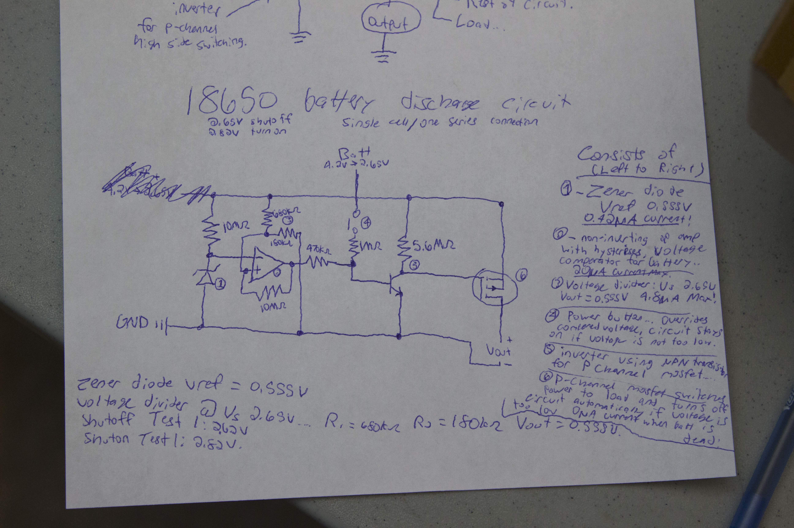

Lithium battery technology is widely used in mobile devices today because of its high energy density. The same cells used in laptop batteries can be configured to power cars, houses, virtually anything. The only problem is that every battery pack has custom protection circuits made for its specific configuration. In order to assemble my own battery packs, I must create these circuits myself. Therefore, I made a discharge protection design using only low level components that is easily scalable for any configuration I want to make (just change one resistor!). As well, my circuit has an ultra low current consumption of 30μA max, and an auto shutoff for ZERO current draw in the “off” state.
Lithium ion batteries should not go lower than 2.5V. When a device is “drained”, the batteries actually still have some charge left. However, if we continue using them at this voltage, they may become unusable in the future.
the 2.5V cutoff is safely handled at 2.62V, increasing life cycles of battery (single cell model)
Maximum 30μA current, no relays
Auto shutoff means ZERO quiescent current
Change one resistor, design any pack up to 30V 45A
For increased specs, replace one mosfet / add more
Using basic logic level components
7 resistors, 1 op amp, zener diode, NPN transistor, p-channel mosfet and a switch.
Here is the first *rough* design schematic. On the right, you can see *my attempt* at explaining the features of the circuit. I am working on a clean, properly labeled design currently.
Design a pack of any size and reuse the circuitry.
What happens if you want a higher voltage than 3.7? You
simply add more batteries in series. For example, two in series
would be nominal 7.4V (3.7 x 2). However, my circuit is designed
to shut off at 2.62V. In order to achieve the same result with
two batteries in series we should take our original shutoff (2.62V)
and multiply it by the number of batteries in series.
In our case we get 5.24V as our shutoff.
The op amp is our comparator
of the circuit, and has a reference of 0.555V generated by the zener diode.
It will shut off power from the battery when its non-inverting input is 0.555V. Using the
voltage divider formula below I have simplified the equation to find
R1 for our circuit.
R1 = ( ( Vin / 0.555 ) * 180 000 ) - 180 000
Vin = desired shut off voltage (2.62V x number of batteries in series)
We assume the second resistor is 180kΩ, and that our output from the zener reference will be 0.555V.
This simplifies things to an easy calculation where we can replace one resistor value R1 in the circuit for virtually any design.
**No relays** I found many circuits online using relays, which are great for high loads but draw much more current, even in the off state! You can find relays in the low mA range, around 10 to 20mA but this does not compare to 30μA. My circuit achieves this by using mosfets, with the gate driven by an op amp. The mosfet I used is able to supply 30V and 45A, so it is well beyond the scope of small projects.
If you would like to make large battery packs over these specs, you would obviously have to get a more beefy mosfet. As well, replace R1 in the voltage divider with the formula presented in the scalability section.
The circuit is still in its first design stage. I still have to
complete some basic functionality but so far I am getting promising results.
I still need to implement:
If any aspects of this project interest you, contact me for more details, a detailed schematic, or to participate!
Contact Me